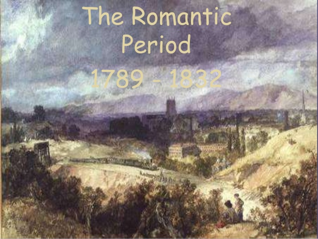
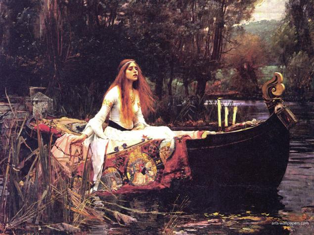

Romantic Era or Romanticism
Romantic era was a literary and artistic movement that originated in European countries in the end of the 18th century. The term first appeared in England in 17 th century in the sense of extravagant fictitious, unreal, but this was the time when the generation of revolution and wars, of stress had produced doubts on the security of the age of reason that causes a question mark on the existence of human civilization. It was basically a revolution against an previous established order of all the defined things-against precise rules, laws, and social formulas that characterized Classicism in general that has to be vanished from the society. Basically focused on praised imagination over reason, emotions over logic. In this era more complex, idiosyncratic characters has been replaced in place of the static universal types of classical heroes in the literature. It encouraged individualism of mankind and gave the power of free expression of personal feelings and turned to emotion and imagination as a huge sources of inspiration for the human civilization. A reaction against the Age of Reason that saw both the American and the French Revolutions.The literary and artistic movement known as Romanticism originated in England in 1798 (with the publication of Lyrical Ballads, a collection of poems by William Wordsworth and Samuel Taylor Coleridge) and quickly spread from there to the rest of Europe and America. A reaction against the Age of Reason that saw both the American and the French Revolutions.
Characteristics of Romanticism
Romantic age distingishes literary and artistic values in the less esthetical parts of the reality so it claimes as the anticipation of the symbolism.
The literature, art and music of this time became avenues for individual expressions and speaking out.
Romanticism has itself various aims such as to belief in the goodness of humanity, and new discovery of the artist as a special individuality creator.
Romanticism had 4 basic principles:
“the original unity of man and nature in a Golden Age, the subsequent separation of man from nature and the fragmentation of human faculties, the interpretability of the history of the universe in human, spiritual terms, and the possibility of salvation through the contemplation of nature.”
It determines the postion of individual as the centre of all things, of life and all of the eperience.
The predominace of imagination over reason and formal rule for some social causes of humanity.
Principles of Romanticism
1. Romanticism was a reaction against convention.
In accordance with a political movement, this reaction which was reflected in the new democratic ideals that significantly opposed monarchy system and feudalism of governance. As similar in art, it reacts a turn away from Neoclassicism concept of society and the ancient models of Greek perfections and classical correctness.
2. Romanticism asserted the power of the individual
As discussed above, this era basically supports the idea of individuality. It meant the idea of objective reality would give way to subjective experience and it allows each and every one has power to speak and do whatever needed.
3. Romanticism reflected a deep appreciation of the beauties of the nature
In this era, writers used nature as the spirit to humankind. They believed in the spiritual nature of reality and metaphysical reality. Nature is described to people as a material reality, however, since it supported such strong feelings in humankind, it revealed itself as containing a higher, spiritual truth.
4. Romanticism was idealistic.
As per the aspect of idealistic, Romanticism suits well in it. It really existed primarily in the ideal world- that is in the mind – while the material would merely reflected that universe. So it can be say that Romanticism was much more realistic than the real world because it tended to be optimistic in its outlook on life.
Writers of the Romantic Period
Poets
William Wordsworth
Percy Bysshe Shelley
Samuel Taylor Coleridge
John Keats
George Gordon Byron
Alfred Tennyson
Novelists
George Eliot
Jane Austen
Charlotte And Emily Bronte
Charles Dickens
The dreams of yesterday are the hopes of today and the reality of tomorrow. Science has not yet mastered prophecy. We predict too much for the next year and yet far too little for the next ten.